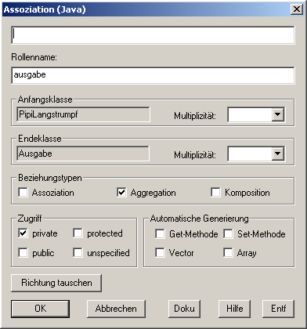
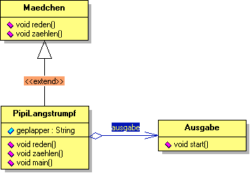

Aggregation |
|
|  |
Eine "Aggrgation" wird genauso erzeugt, wie eine Vererbung im
vorherigen Schitt. Nur dass man am Anfang nicht auf den
Vererbung-Button klickt, sondern auf
den Assoziation-Button. Es wird ein Pfeil mit unausgefüllter Raute am einen Ende gezeichnet, auf dem "ausgabe" steht. Ein Doppelklick auf diesen Pfeil lässt den Assoziation-Dialog erscheinen, wo Sie im oberen Eingabefeld "ausgeb" eingeben. Durch Anhaken des Kästchens "Aggregation" wandeln Sie eine "Assoziation" in eine "Aggregation" um. Als Zugriffsspezifikation wählen wir "public". Somit haben Sie eine Aggrgation erzeugt. |
Das fertige Klassendiagramm |
|
|  |
Jetzt haben wir ein vollständiges UML-Diagramm mit allen wichtigen Elementen erstellt.
Wenn Sie den Anweisungen richtig gefolgt sind, sollte Ihr Diagramm wie links abgebildet aussehen. |